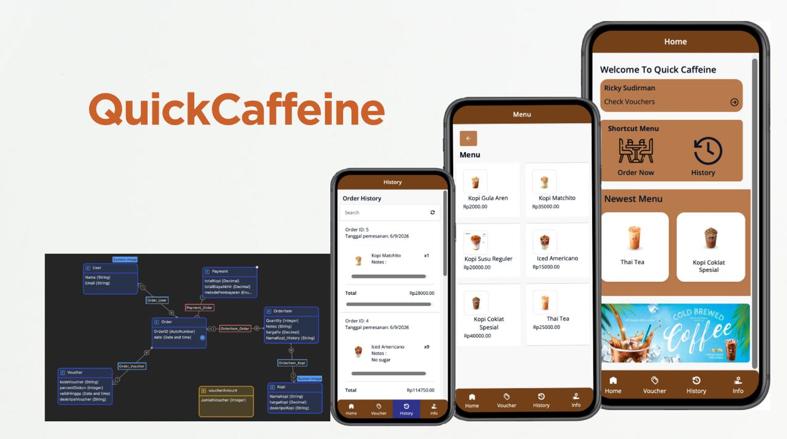

Individual project
QuickCaffeine
A simple mobile app for ordering a coffee from your phone, with dynamic pricing based on applied voucher. UI, logic, database design, validation, and flow built in Mendix Studio Pro. Two roles available: Admin and Customer.
I spent a semester learning the functions and logics needed to build an app in Mendix, such as designing a working domain model, micro and nano flows, and workflows. Then I applied that knowledge to build QuickCaffeine.